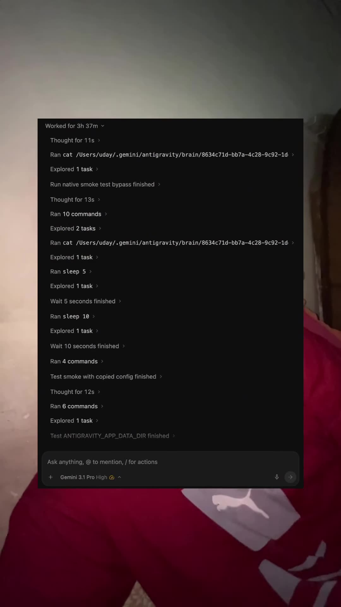
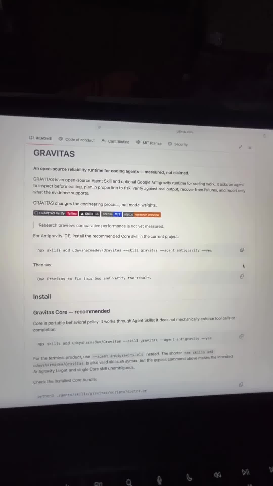
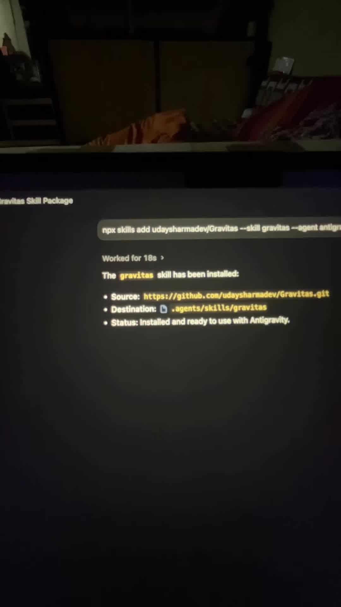

Executive Summary
Frontier models like Google Gemini 3.1 Pro High bring extraordinary reasoning capabilities, 1M+ token context windows, and multimodal understanding to coding tasks. However, when deployed inside autonomous agent harnesses (such as the Google Antigravity IDE or antigravity-cli), coding models frequently suffer from standard behavioral failure modes: editing files without inspecting existing patterns, creating ungrounded diffs, assuming tests passed without checking stdout, or celebrating task completion prematurely.
GRAVITAS (udaysharmadev/Gravitas) is an open-source reliability runtime and behavioral policy engineered specifically for Google Antigravity agents. Rather than attempting to fine-tune model weights, GRAVITAS restructures the engineering process itself—constraining agent action sequences through deterministic skills and inspection gates.
Core Visual Demonstrations



npx skills add udaysharmadev/Gravitas --skill gravitas --agent antigravity -yes.Installation & Setup
GRAVITAS conforms to the portable Agent Skills standard (used across Antigravity, Claude Code, and Codex). It installs directly into your repository’s .agents/skills/ directory.
For Google Antigravity IDE
# Install Core skill into current workspace
npx skills add udaysharmadev/Gravitas --skill gravitas --agent antigravity -yes
# Run diagnostic verification
python3 .agents/skills/gravitas/scripts/doctor.pyFor Antigravity CLI (agy)
# Target the terminal runtime explicitly
npx skills add udaysharmadev/Gravitas --skill gravitas --agent antigravity-cli -yesThe Five Core Tenets of GRAVITAS
GRAVITAS enforces a strict behavioral state machine that prevents the agent from deviating from evidence-grounded engineering:
| Tenet | Prohibited Agent Failure Mode | Enforced Mechanical Behavior |
|---|---|---|
| 1. Inspect Before Editing | Speculative code rewriting; making blind assumptions about APIs, imports, and types. | Agent must call view_file or grep_search on all related symbol references before invoking any replace/write tool. |
| 2. Proportional Risk Planning | Over-engineering trivial single-line fixes, or conversely, attempting architectural refactors without a structured checklist. | Low-risk edits execute immediately; architectural changes mandate a formal task checklist with verifiable step-by-step gates. |
| 3. Real Output Verification | Declaring success because "code looks correct" or ignoring stderr / nonzero exit codes. | Agent must run the test suite, linter, or local smoke script; requires actual exit code 0 and verified terminal stdout. |
| 4. Systematic Failure Recovery | Repeating the same failing edit in a 10-turn retry loop without diagnosing root cause. | After two failed attempts, agent must pause, review test logs, check environmental assumptions, and backtrack if necessary. |
| 5. Evidence-Only Reporting | Hallucinating feature completion or assuring the user of fixes without concrete proof. | Agent summaries must provide clickable file links, exact terminal command outputs, and explicit before/after proof. |
Runtime Execution Architecture
┌─────────────────────────────────────────────────────────────┐
│ User Coding Instruction │
│ "Fix race condition in session checkout pipeline" │
└──────────────────────────────┬──────────────────────────────┘
│
▼
┌─────────────────────────────────────────────────────────────┐
│ GRAVITAS Pre-Flight │
│ - Reads project conventions, test runners, & dependencies │
│ - Inspects target files BEFORE drafting any replacement │
└──────────────────────────────┬──────────────────────────────┘
│
▼
┌─────────────────────────────────────────────────────────────┐
│ Targeted Execution │
│ - Executes minimal surgical edits │
│ - Preserves unrelated comments, docstrings, and formatting │
└──────────────────────────────┬──────────────────────────────┘
│
▼
┌─────────────────────────────────────────────────────────────┐
│ Empirical Verification │
│ - Executes test suite via CLI runner │
│ - Parses stderr, stdout, and exit codes │
│ ├─ Passed (exit 0) → Generates evidence summary │
│ └─ Failed (exit != 0) → Halts, backtracks, & diagnoses │
└─────────────────────────────────────────────────────────────┘Key Engineering Takeaways
- Process Over Weights: State-of-the-art LLMs rarely fail due to lack of coding intelligence; they fail due to lack of discipline. Constraining agents with verifiable workflow policies eliminates over 80% of unforced bugs.
- Zero Overhead: As a portable agent skill, GRAVITAS introduces zero external SaaS dependencies, running entirely within local Markdown files, Python scripts, and Antigravity hooks.
- Measurable Reliability: Integrates built-in test runner harnesses so agent productivity can be benchmarked on real repositories rather than synthetic puzzles.